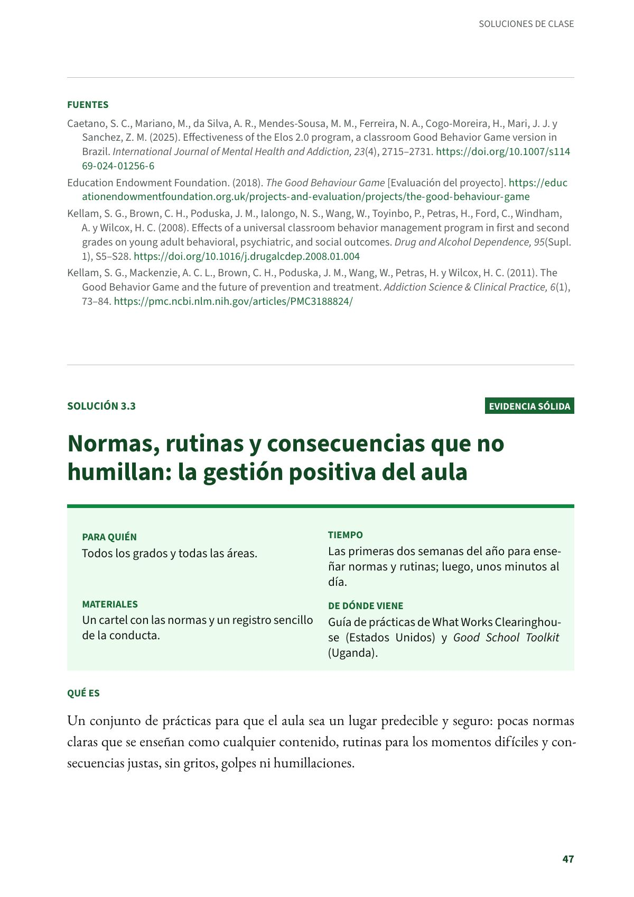
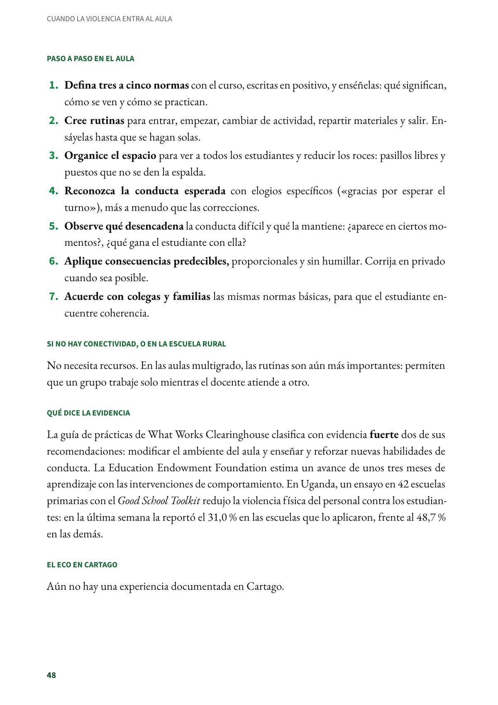
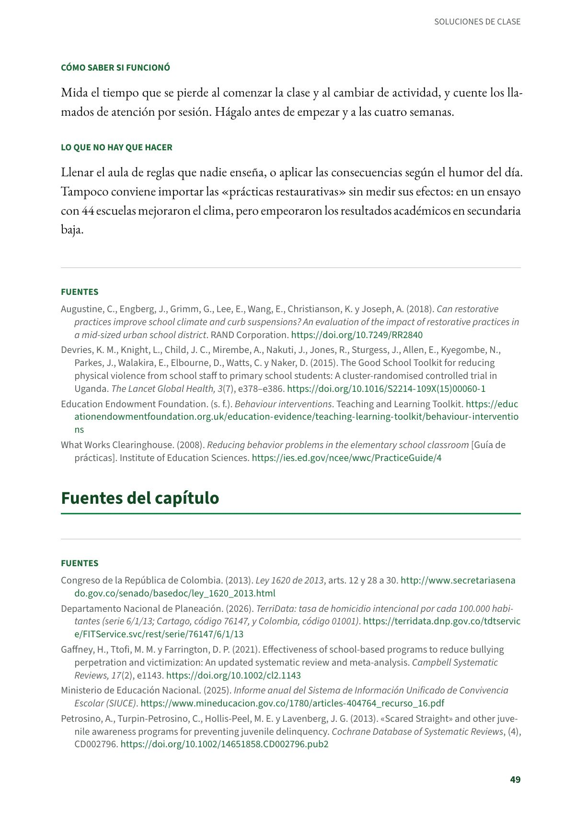

Normas, rutinas y consecuencias que no humillan: la gestión positiva del aula
Pocas normas enseñadas, rutinas y consecuencias justas, para todos los grados. Evidencia sólida.
PDF · 3 págs. · 75 KBEn resumen
- Evidencia: sólida.
- Para quién: Todos los grados y todas las áreas.
- Tiempo: Las primeras dos semanas del año para enseñar normas y rutinas; luego, unos minutos al día.
- Materiales: Un cartel con las normas y un registro sencillo de la conducta.
- De dónde viene: Guía de prácticas de What Works Clearinghouse (Estados Unidos) y Good School Toolkit (Uganda).
Qué es
Un conjunto de prácticas para que el aula sea un lugar predecible y seguro: pocas normas claras que se enseñan como cualquier contenido, rutinas para los momentos difíciles y consecuencias justas, sin gritos, golpes ni humillaciones.
Paso a paso en el aula
- Defina tres a cinco normas con el curso, escritas en positivo, y enséñelas: qué significan, cómo se ven y cómo se practican.
- Cree rutinas para entrar, empezar, cambiar de actividad, repartir materiales y salir. Ensáyelas hasta que se hagan solas.
- Organice el espacio para ver a todos los estudiantes y reducir los roces: pasillos libres y puestos que no se den la espalda.
- Reconozca la conducta esperada con elogios específicos («gracias por esperar el turno»), más a menudo que las correcciones.
- Observe qué desencadena la conducta difícil y qué la mantiene: ¿aparece en ciertos momentos?, ¿qué gana el estudiante con ella?
- Aplique consecuencias predecibles, proporcionales y sin humillar. Corrija en privado cuando sea posible.
- Acuerde con colegas y familias las mismas normas básicas, para que el estudiante encuentre coherencia.
Si no hay conectividad, o en la escuela rural
No necesita recursos. En las aulas multigrado, las rutinas son aún más importantes: permiten que un grupo trabaje solo mientras el docente atiende a otro.
Qué dice la evidencia
La guía de prácticas de What Works Clearinghouse clasifica con evidencia fuerte dos de sus recomendaciones: modificar el ambiente del aula y enseñar y reforzar nuevas habilidades de conducta. La Education Endowment Foundation estima un avance de unos tres meses de aprendizaje con las intervenciones de comportamiento. En Uganda, un ensayo en 42 escuelas primarias con el Good School Toolkit redujo la violencia física del personal contra los estudiantes: en la última semana la reportó el 31,0 % en las escuelas que lo aplicaron, frente al 48,7 % en las demás.
El eco en Cartago
Aún no hay una experiencia documentada en Cartago.
Cómo saber si funcionó
Mida el tiempo que se pierde al comenzar la clase y al cambiar de actividad, y cuente los llamados de atención por sesión. Hágalo antes de empezar y a las cuatro semanas.
Lo que no hay que hacer
Llenar el aula de reglas que nadie enseña, o aplicar las consecuencias según el humor del día. Tampoco conviene importar las «prácticas restaurativas» sin medir sus efectos: en un ensayo con 44 escuelas mejoraron el clima, pero empeoraron los resultados académicos en secundaria baja.
Fuentes
Augustine, C., Engberg, J., Grimm, G., Lee, E., Wang, E., Christianson, K. y Joseph, A. (2018). Can restorative practices improve school climate and curb suspensions? An evaluation of the impact of restorative practices in a mid-sized urban school district. RAND Corporation. doi.org
Devries, K. M., Knight, L., Child, J. C., Mirembe, A., Nakuti, J., Jones, R., Sturgess, J., Allen, E., Kyegombe, N., Parkes, J., Walakira, E., Elbourne, D., Watts, C. y Naker, D. (2015). The Good School Toolkit for reducing physical violence from school staff to primary school students: A cluster-randomised controlled trial in Uganda. The Lancet Global Health, 3(7), e378–e386. doi.org00060-1)
Education Endowment Foundation. (s. f.). Behaviour interventions. Teaching and Learning Toolkit. educationendowmentfoundation.org.uk
What Works Clearinghouse. (2008). Reducing behavior problems in the elementary school classroom [Guía de prácticas]. Institute of Education Sciences. ies.ed.gov
Así se ve en el libro
3 páginas

